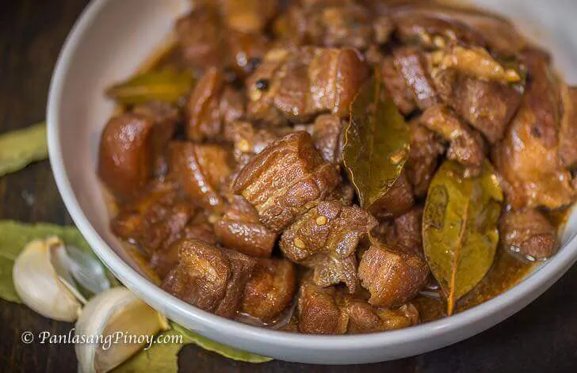

Adobo

Adobo is a Staple Filipino Dish that uses Soy Sauce and Vinegar to add flavor to the pork.
Ingredients
- 1/2kg Pork Liempo
- 1 Cup of Soy Sauce
- 1 Cup of Vinegar
- 2 tbsp. of oil
- 1 glove of garlic
- 1 pcs. onion
- 2 laurel leaves
- Salt and Pepper to Taste
Procedures
- heat a pan in medium heat and add 2 tbsp. of oil
- Saute garlic until golden brown and add chopped onion
- Add pork and cook for 10 mins
- Add the Soy Sauce and Vinegar and let it simmer for 15 mins.
- Add Salt and Pepper to Taste
- Enjoy your Adobo served with Rice